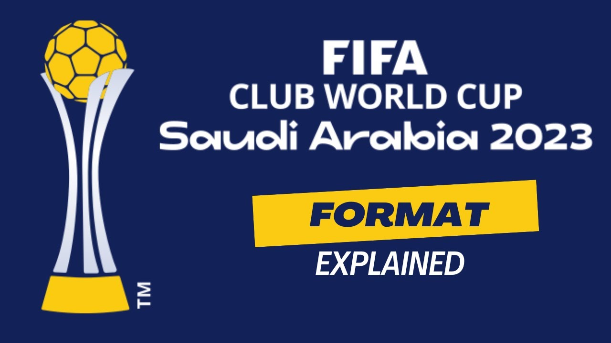

>> Club World Cup: Who Will Win In Saudi?

- The Club World Cup kicks off in Saudi Arabia on December 12th.
- In the world of football, the best of the very best will battle it out for the chance to be crowned the 2023 FIFA ClubWorld Cup Champions.
- The tournament starts on December 12 at the King Abdullah Sports City Stadium and finishes at the same venue on December22 2023. Saudi Arabia's second-largest city, Jeddah, will play host to teams from the Middle East, North America, SouthAmerica, Europe, Oceania, Africa, and Asia.
- The seven teams taking part in this year's competition are:
* Al Ahly FC (Egypt)
* Auckland City FC (New Zealand)
* Al-Ittihad FC (Saudi Arabia)
* Club León (Mexico)
* Fluminense FC (Brazil)
* Manchester City (England)
* Urawa Reds (Japan)
- Egyptian side Al Ahly FC cemented their spot after overcoming Morocco's Wydad 3-2 in the CAF Champions League final.Auckland City from New Zealand qualified again, securing their record eleventh OFC Champions League title with a 4-2 winover Fijiian team Suva.
- Mexico's Club León earned their place following their first-ever CONCACAF tournament win, defeating LAFC earlier thisyear. Fluminense FC of Brazil qualified by emerging victorious in a heated Copa Libertadores final against theirArgentine rivals, Boca Juniors.
- European Champions Manchester City secured their qualification by triumphing in the 2022/23 UEFA Champions League finalagainst Inter Milan and clinching victory in the 2022/23 UEFA Super Cup against Sevilla. Urawa Reds from Japan securedtheir place by defeating Saudi's Al-Hilal in the AFC Champions League. Saudi Arabia's Al-Ittihad FC qualified as thecurrent champions of the Saudi Pro League, given Saudi Arabia's status as the host nation.
- Having won the Premier League, English FA Cup, and Champions League, Manchester City are considered a favourite for theClub World Cup title. It's The Cityzens debut into the tournament and supporter and journalist Josh Lawless says winningthe competition would finish off a brilliant year for the club.
- "When you're an outsider, you don't care for it as much. But when you're in it, often there's a shift in momentum whenthere's a trophy at stake. You might as well go and win it. Champions of Europe is one thing. Champion of the world is aspecial thing that I'm sure City fans would love to sing at matches." Josh explained.
- For Saudi Arabia, the Club World Cup will be the country's first major football tournament on the international stageand an opportunity to lay the groundwork ahead of hosting the FIFA World Cup. The country has made significant moveswithin the sport over the past few years, signing several stars, including Cristiano Ronaldo, Karim Benzema and Neymar.Middle East football expert Ben Jacobs thinks travelling fans will have a blast.
Source : Click here